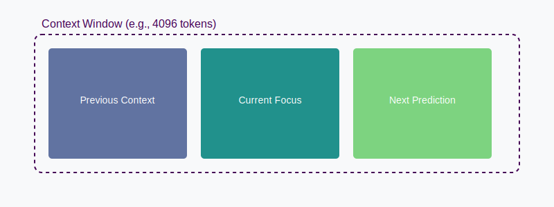
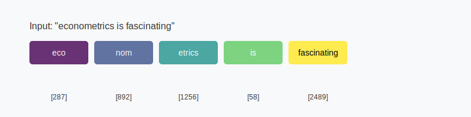
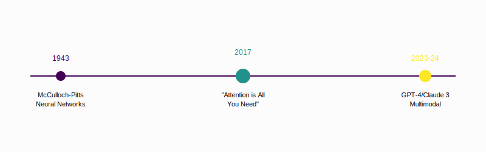

Data Analysis with AI: Concepts
Large Language Models: Key Concepts
2025-02-18
Intro to the concept of LLMs
Why
Teaching Data Analysis courses + prepping for 2nd edition of Data Analysis textbook
AI is both amazing help and scary as #C!*
This is a class to
- discuss and share ideas of use
- gain experience and confidence
- find useful use cases
- learn bit more about LLMs and their impact
Share cool stuff
- Like this presentation in ‘revealjs’
This class – approach
- focus on data analysis: code, stats, reporting
- self-help group to openly discuss experience and trauma
- get you some experience with selected tasks
- move from execution as key skill to design and debugging
- get you a class you can put into your CV
Readings
- Ethan Mollick “Co-Intelligence: Living and Working with AI” Penguin Random House 2024
- Anton Korinek “Generative AI for Economic Research: Use Cases and Implications for Economists,” Journal of Economic Literature 61(4) December 2024 Update 1–74
- Many blog posts in presentation
This class – topics
- Week 1: Effectively summarize academic content
- Week 2: Document data – World Values Survey
- Week 3: Exploratory data analysis and report creation - VWS
- Week 4: Data manipulation, wrangling – Football games and teams
- Week 5: Text analysis and information extraction – Football
- Week 6: Building interactive applications – simulated data
What are Large Language Models?
- Statistical models predicting next tokens
- Transform text into mathematical space
- Scale (training data) matters enormously
- Pattern recognition at massive scale

LLMs as Prediction Machines
- Economic Framework: Similar to forecasting models
- Input → Black Box → Predicted Output
- Key Difference: Works with unstructured text data
- Training Process: Supervised learning at scale
- Training Material: “Everything” (all internet + many books)
Understanding Tokens
Tokenization example showing how text is processed
Context Window & Memory
Note
Larger context = Better understanding but higher computational cost
Hallucination: Prediction Errors
Type I Error (False Positive)
- Generating incorrect but plausible information
- Example: Creating non-existent research citations
Type II Error (False Negative)
- Failing to generate correct information
- Example: Missing key facts in training data
Economic Impact of errors
- Cost of verification (humans, AI), risk assesment
Reinforcement Learning in LLMs
Key Components
- RLHF: Reinforcement Learning from Human Feedback
- Models learn from human preferences
- Helps align outputs with human values
- Constitutional AI
- Models trained to follow specific rules
- Reduces harmful or biased outputs
- Direct Preference Optimization
- More efficient than traditional RLHF
- Anthropic’s major innovation in 2023
Impact on LLMs
- Better Alignment
- More helpful responses
- Reduced harmful content
- Better instruction following
- Improved Quality
- More consistent outputs
- Better reasoning
- Clearer explanations
RL Improvements in Claude Development
Key RL Techniques Used
- Constitutional AI
- Core part of Claude’s development
- Helps ensure helpful, safe responses
- Improves reliability of outputs
- Direct Preference Optimization (DPO)
- More efficient than traditional RLHF
- Reduces training complexity
- Better alignment with preferences
Observable Improvements
- Response Quality
- More nuanced understanding
- Better reasoning capabilities
- More consistent outputs
- Task Performance
- Improved coding abilities
- Better at complex analysis
- More reliable fact adherence
Evolution of Language Models
Key Breakthrough: “Attention is All You Need” (2017)
- Introduced the Transformer architecture
- Eliminated need for sequential processing
- Enabled massive parallelization
- Foundation for all modern LLMs
Vaswani et al. (2017). “Attention Is All You Need”. NeurIPS 30.
To learn more:
Understanding LLMs
- Financial Times: How AI Large Language Models Work
- The Economist: How Large Language Models Work
- Thinking like AI
- Context window
Video Resources
- “Introduction to Large Language Models” 1hr overview
- Andrej Karpathy: “Let’s build GPT: from scratch, in code, spelled out”
The plan is follow advice
Practice
- “just use AI to do stuff that you do for work or fun, for about 10 hours, and you will figure out a remarkable amount” (Ethan Mollick, 2024)
More on Strategy
- Strategy in business Build a winning AI strategy, HBR 2023
Working with LLMs
Cyborgs vs Centaurs
The Centaur and Cyborg Approaches based on Co-Intelligence: Living and Working with AI By Ethan Mollick

Co-Intelligence
The Jagged Frontier of LLM Capabilities
- lot of tasks may be considered to be done by LLM
- Uncertainty re how well LLM will do them – “Jagged Frontier”
- Some unexpectedly easy, others surprisingly hard
- Testing the frontier for data analysis – this class

Image created Claude.ai
The Centaur Approach
- Clear division between human and LLM tasks
- Strategic task allocation based on strengths
- Human maintains control and oversight
- LLM used as a specialized tool
- Quality through specialization
- Better for high-stakes decisions

Image created in detailed photorealistic style by Ralph Losey with ChatGPT4 Visual Muse version
The Cyborg Approach
- Deep integration between human and LLM
- Continuous interaction and feedback
- Iterative refinement of outputs
- Learning from each interaction
- Faster iteration cycles
- More creative solutions emerge

Image created in detailed photorealistic style by Ralph Losey with ChatGPT4 Visual Muse version
Analysis Approaches: Centaur vs Cyborg
Centaur 🧑💻
Planning 👤 Design research plan
🤖 Suggest variables
Data Prep 👤 Define cleaning rules
🤖 Execute cleaning code 👤 Validate cleaning
Analysis 👤 Choose methods
🤖 Implement code
👤 Validate results
Reporting 👤 Outline findings
🤖 Draft sections
👤 Finalize
Cyborg 🦾
Planning 👤🤖 Interactive brainstorming
👤🤖 Collaborative refinement
Data Prep 👤🤖 Iterative cleaning
👤🤖 Real-time modification
👤🤖 Joint discovery
Analysis 👤🤖 Exploratory conversation
👤🤖 Dynamic adjustment
👤🤖 Continuous validation
Reporting 👤🤖 Co-writing process
👤🤖 Real-time feedback
👤🤖 Iterative improvement
Practical Guidelines
- Start with clear task boundaries (Centaur)
- Gradually increase integration (Cyborg)
- Many workflows combine both approaches
- Higher stakes = more control
- Always validate critical outputs
- Build experience in prompt engineering 📍 this class
Practical Guidelines (2025-02)
- Current LLMs good but not perfect
- Hard to fully outsource
- Cyborg is the default mode
Future of Data Analysis Workflows
What we see
- Major gains in coding
- Some gains elsewhere
- Enhanced productivity (25-40% shown in studies)
- Focus on human judgment and expertise
What we don’t see
- Which tasks exactly
- What new iteration LLM will improve
Key concepts for Using LLMs
LLM in work
Prompt as small task
- New mindset: having an assistant: design, ask, check
- 📍 This class Data Analysis related tasks
Built into coding
- Github copilot in VSCode, RStudio, Jupyter Notebook
Specialized tools (ChatGPT Canvas, Claude Projects)
Anthropic “prompt generator” to optimize the prompts that via Anthropic Console Dashboard (click “Generate a Prompt”).
Agents
Prompt(ing): 2023–2025
- In 2023-24, great deal of belief in prompt engineering as skill
- In 2025 there are still useful concepts and ideas 📍 Week 2
- But not many tricks.
- Highly relevant response = provide any important details or context.
Interactive Workspaces for LLM Collaboration (1/2)
Major AI Platforms
| Workspace | Key Features |
|---|---|
| Anthropic Claude Artifacts | • Dedicated output window • Supports text, code, flowcharts, SVG graphics, websites, dashboards • Real-time refinement and modification • Sharing and remixing capabilities |
| ChatGPT Canvas | • Separate collaboration window • Text editing and coding capabilities • Options for edits, length adjustment, reading level changes • Code review and porting features |
| OpenAI Advanced Data Analysis | • Data upload and analysis • Visualization capabilities • Python code execution in back end • Error correction and refinement |
Source: Korinek “Generative AI for Economic Research: Use Cases and Implications for Economists,” Journal of Economic Literature 61(4) December 2024 Update 1–74
Interactive Workspaces for LLM Collaboration (2/2)
Specialized Tools
| Workspace | Key Features |
|---|---|
| Claude Analysis Tool | • Fast exploratory data analysis • Interactive visualizations with real-time adjustments |
| Google NotebookLM | • Document upload for research grounding • Citation and quote provision • “Deep dive conversation” podcast generation |
| Microsoft Copilot | • Assistance in Word, Excel, PowerPoint, etc. • Data analysis, formula construction |
| Google Gemini for Workspace | • Integration with Google’s office suite, Assistance in Docs etc |
| Cursor AI Code Editor | • AI-assisted coding • Code suggestions and queries, optimization, debugging • Real-time collaboration |
Source: Korinek “Generative AI for Economic Research: Use Cases and Implications for Economists,” Journal of Economic Literature 61(4) December 2024 Update 1–74
Stochastic Parrot

Image created in detailed photorealistic style by Ralph Losey with ChatGPT4 Visual Muse version
Stochastic Parrots
- Stochastic = when prompted repeatedly, LLMs may give different answers
- Parrot = LLMs can repeat information without understanding
- Philosophy = to what extent do they understand the state of the world?
Data Analysis
- To what extent running something yields same result? 📍 this class
- How good are predictions? 📍 this class
LLM vs human 2024
- LLM were trained on vast amounts of data, most of them low quality
- Best = most likely
- Human = trained on much less data, but higher quality
- Best = learnt from experience, best people
Big debate on errors and hallucination
- Is hallucination and errors inherent or may be improved
- Read Carl T. Bergstrom and C. Brandon Ogbunu: chatgpt isn’t hallucinating it’s bullshitting, 04.06.2023
- Even a paper Michael Townsen Hicks, James Humphries & Joe Slater

The issue is important in medicine

LLM vs human 2025
- LLM also trained on scientific papers, books
- New methods to improve accuracy
- Solve scientific problems
- Reasoning models, like OpenAI o3
Ethics
Is it Okay to use “Everything” as training material?
- Read essay by Robin Sloan
Conclusions and discussion
AI Use Cases: Student response
- Coding Assistance & Debugging
- “It helps me with fixing errors in coding.”, “Find small errors I can’t on my own.”
- “I used it to generate data in Excel to then work with it in Python and R.”
- Concept Clarification & Learning Support
- ““To understand certain topics”, “for clarifications on macroeconomics and data analysis concepts.”
- “For Micro and Macro courses, to understand graphs easily.”
- Writing & Proofreading
- “I use AI for text and code touch-ups for smoother language.”
- “While writing papers, I use ChatGPT as proofreader”, “improving the coherence.”
- “I usually give an idea and AI makes it perfect.”
AI Use Cases: Predictions
Literature Review & Summarization
AI helps quickly find relevant papers, summarize key arguments, and extract citations, saving time in reviewing large bodies of work.Data Analysis & Coding Assistance
AI supports coding in R, Python, and Stata, assisting with debugging, automating repetitive tasks, and suggesting statistical methods for empirical research.Writing & Editing Support
AI aids in drafting, structuring, and refining academic writing, improving clarity, grammar, and coherence while maintaining academic integrity.
Korinek, JEL 2025 use cases
Conclusions and discussion
Many LLMs, constant evolution
- ChatGPT, 4, 4o, o1, o3, Tasks, Canvas, Claude 3.5, Gemini series…
- 2024 summer piece in The Economist
- 2025-02 Which Ai by Ethan Mollick, especially regarding data analysis
Gabor’s current take 1
Evolution to continue
- AI tools will evolve in precision but will make errors
- AI tools will be better in finding bugs but make new ones
- Consistency will remain a problem.
- Compute will be cheaper, personal AI on phone (not cloud)
Gabor’s current take 2
Your place
- Without core knowledge you can’t interact
- Strong knowledge and experience helps debugging
- Cheaper data analysis = more use cases
Date stamp
This version: 2025-02-17
Gabors Data Analysis with AI - 2025-02-17 v0.2